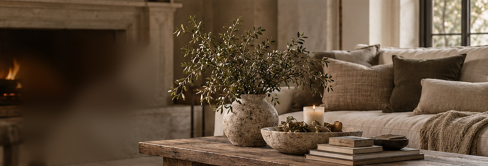
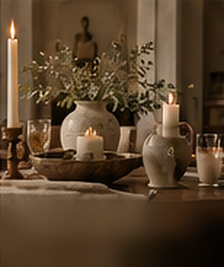
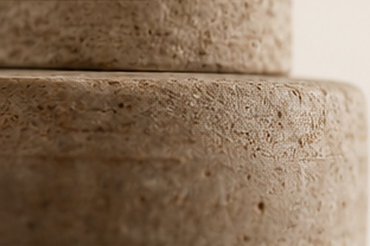
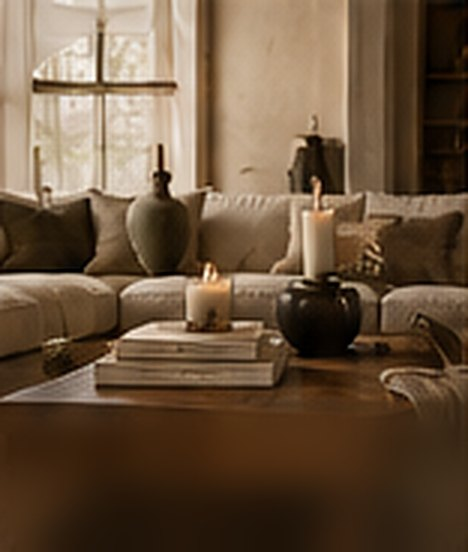

Warmth, made to last.

The comfort of a home.
A haven is the place you come back to. It is where people gather, where meals are shared and where the light stays on a little longer.
It stands for family, hospitality, candlelight and rest. The kitchen table, the throw on the sofa, the bowl that is always full.

The permanence of real materials.
Stone stands for architecture, craftsmanship and things that are made to last. Travertine and marble, heavy stoneware, solid wood, linen and wool.
We choose real, substantial materials whenever we can. No printed faux marble, no polyester pretending to be linen. When you open a Haven & Stone package, we want your first thought to be, "Wow, this is nice."
Curated, not crowded
We would rather offer thirty beautiful, well made pieces than five hundred forgettable ones. We do the searching so you don't have to.
Collected over time
Every piece is chosen to live alongside the others, so your home can grow slowly and still feel whole.
Elevated, attainable
Quietly luxurious design with honest materials, at prices that let you bring something beautiful home.
A home should feel collected, not decorated.

Pieces chosen for your home.
Haven & Stone was born alongside The Finishing Touch, our Texas home styling, organization and staging studio. After a project, clients receive their own Haven & Stone Home Edit, a short list of pieces selected specifically for their rooms.
Interested in a Home Edit of your own? We would love to hear about your space.
Ask about a Home Edit